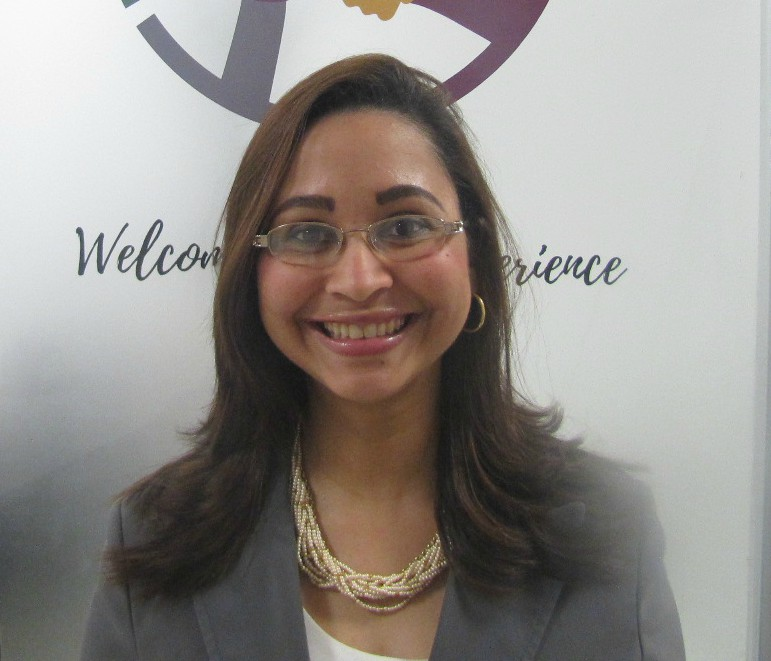

Conferencia dirigida a los participantes que tienen actualmente o quisieran conocer más sobre dinámicas de alta colaboración (DAC´s), que puedan ser empleadas durante el ciclo de vida agile.
Se mostrará cómo pueden en un proyecto agile, estructurar diversas DAC´s que pueden ser empleadas para el día a día del ciclo de vida de los proyectos ágiles, cualquiera que sea la industria y el método a emplear (Scrum, Scrumban/Kanban, XP u otros).
Se aplicará una dinámica de alta colaboración de la etapa de inicio por mesa. Después de los 45 minutos podrán, al día siguiente, poner en práctica lo aprendido en sus organizaciones, para el inicio de proyectos y se llevarán una idea muy clara de cómo se realiza el recorrido de proyectos ágiles.
Expositor: 
Melanie Castillo
Ingeniera en telecomunicaciones con un master en Gerencias de Proyectos (MGP) y un master en docencia superior, certificada PMP® y ACP®del PMI®.
Es fundadora y CEO de PMOLead®, comunidad y fuente de información para apasionados en Agile Project Management y People Management.
Cuenta con una trayectoria de gestión de proyectos y Oficinas de Proyectos (PMO´s) de más de 13 años de diversas industrias como tecnología, banca pública y privada, marítima telecomunicaciones, aviación, agroindustria, construcción entre otras.
Conferencista y facilitadora de Gerencias de Proyectos predictivos, híbridos y agiles, dinámicas de alta colaboración, People Management en instituciones de Louisville, Towson University & ULAT a más de 450 personas en los últimos 4 años.